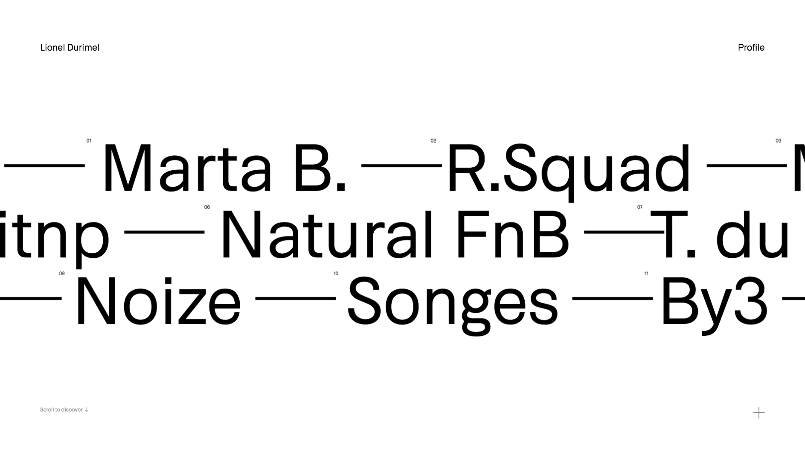

<html>
<head>
  <meta charset="utf-8">
  <title>Easy Easing</title>
  <link rel="stylesheet" href="./css/talkie.min.css">
  <link rel="stylesheet" href="./css/talkie-default.min.css">
  <link rel="stylesheet" href="./css/monokai_sublime.min.css">
  <style>
    .demo-1,
    .demo-2 {
      width: 80px;
      height: 80px;
      background: #2c3e50;
      border-radius: 50%;
      transform: translate3d(0,0,0);
      cursor: pointer;
    }
    .demo-3,
    .demo-4 {
      width: 100%;
      padding: 20px 0;
      background: #eee;
      cursor: pointer;
      font-size: 0;
    }
    .demo-3 span,
    .demo-4 span {
      display: inline-block;
      width: 200px;
      height: 45px;
      line-height: 45px;
      text-align: center !important;
      color: #fff;
      text-transform: uppercase;
      font-weight: bold;
      font-size: 14px;
      opacity: 0;
      transform: translate3d(0,40px,0);
      margin-right: 14px;
    }
    .demo-3 span:nth-child(1),
    .demo-4 span:nth-child(1) {
      background: #F44336;
    }
    .demo-3 span:nth-child(2),
    .demo-4 span:nth-child(2) {
      background: #4CAF50;
    }
    .demo-3 span:nth-child(3),
    .demo-4 span:nth-child(3) {
      background: #2196F3;
    }
    .demo-1.is-active,
    .demo-2.is-active {
      transform: translate3d(750px,0,0);
    }
    .demo-3.is-active span,
    .demo-4.is-active span {
      transform: translate3d(0,0,0);
      opacity: 1;
    }
    .demo-1 {
      transition: transform .5s linear;
    }
    .demo-2 {
      transition: transform .75s cubic-bezier(0.165, 0.840, 0.440, 1.000);
    }
    .demo-3 span:nth-child(1) {
      transition: opacity .2s cubic-bezier(0.165, 0.840, 0.440, 1.000),
                  transform .2s cubic-bezier(0.165, 0.840, 0.440, 1.000);
    }
    .demo-3 span:nth-child(2) {
      transition: opacity .2s cubic-bezier(0.165, 0.840, 0.440, 1.000) .1s,
                  transform .2s cubic-bezier(0.165, 0.840, 0.440, 1.000) .1s;
    }
    .demo-3 span:nth-child(3) {
      transition: opacity .2s cubic-bezier(0.165, 0.840, 0.440, 1.000) .2s,
                  transform .2s cubic-bezier(0.165, 0.840, 0.440, 1.000) .2s;
    }
    .demo-4 span:nth-child(1) {
      transition: opacity .8s cubic-bezier(0.165, 0.840, 0.440, 1.000),
                  transform .8s cubic-bezier(0.165, 0.840, 0.440, 1.000);
    }
    .demo-4 span:nth-child(2) {
      transition: opacity .8s cubic-bezier(0.165, 0.840, 0.440, 1.000) .1s,
                  transform .8s cubic-bezier(0.165, 0.840, 0.440, 1.000) .1s;
    }
    .demo-4 span:nth-child(3) {
      transition: opacity .8s cubic-bezier(0.165, 0.840, 0.440, 1.000) .2s,
                  transform .8s cubic-bezier(0.165, 0.840, 0.440, 1.000) .2s;
    }
  </style>
</head>
<body>

<!-- put your slides -->

<script layout="cover" invert h-left type="text/x-markdown"
        backface="./img/bg_01.jpg"
        backface-filter="blur(2px) brightness(.3)">

# EASY EASING

Webサイト制作におけるイージングの役割と管理<br>
Yusuke Ishiguro

</script>


<script layout="bullets" type="text/x-markdown">

## 石黒 雄介 / Yusuke Ishiguro

- 株式会社アンティー・ファクトリー<br>
マークアップエンジニア
- 主にCSS, JSを用いたアニメーション実装に注力
- IT系のメディア「GLOSSY」運営中<br>

</script>


<script layout="bullets" type="text/x-markdown">


GLOSSY - <a href="https://glossy.bz/" target="_blank">https://glossy.bz/</a>

</script>


<script layout type="text/x-markdown">


@kokushing

</script>


<script layout="bullets" type="text/x-markdown">

## アジェンダ

- **Webサイトにおけるイージングの役割って？**
- **イージング実装のコツ**
- **イージングの管理方法（SCSS/PostCSS）**

</script>


<script layout="cover" invert type="text/x-markdown"
        backface="./img/bg_04.jpg"
        backface-filter="blur(2px) brightness(.25)">

## Webサイトにおける<br>イージングの役割って？

</script>


<script layout type="text/x-markdown">

イージングとは...

## 「アニメーションをより自然に<br>滑らかに見せるためのもの」

</script>


<script layout h-left type="text/x-markdown">

**イージングなし**

<div class="demo-1" onClick="playDemo(this)"></div>

**イージングあり**

<div class="demo-2" onClick="playDemo(this)"></div>

</script>


<script layout="bullets" type="text/x-markdown">

イージングの種類は4パターン存在

- **linear** (等速)
- **ease-in** (ゆっくり始まる)
- **ease-out** (ゆっくり終わる) ←※先程のデモ
- **ease-in-out** (ゆっくり始まってゆっくり終わる)

バリエーションは複数存在！

</script>


<script layout type="text/x-markdown">

<iframe src="http://easings.net/ja" frameborder="0" width="1000" height="540"></iframe>

**Easing Function 早見表** - <a href="http://easings.net/ja" target="_blank">http://easings.net/ja</a>

</script>


<script layout type="text/x-markdown">

Webサイトのアニメーションに適切なイージングが<br>加わることで...

</script>


<script layout="bullets" type="text/x-markdown">

- **サイト全体のアニメーションのクオリティを向上できる**
- **サイト全体のUXを向上させることができる**
- **サイトの雰囲気を伝えやすくできる**

</script>


<script layout h-left type="text/x-markdown">

**サイトの雰囲気を伝えやすくできる** の例

高級感のあるリッチなサイト（遅めのイージング）<br>
<a href="https://bouguessa.com/" target="_blank">https://bouguessa.com/</a>

勢いのあるサイト（早めのイージング）<br>
<a href="http://carv.ai/" target="_blank">http://carv.ai/</a>

</script>


<!--<script layout="bullets" type="text/x-markdown">

**自分が気に入っているWebサイト**



[Lionel Durimel - Art Director + Interactive](http://www.durimel.io/nel)

</script>-->


<script layout type="text/x-markdown">

Webサイトにおけるイージングの役割って？

</script>

<script layout="cover" invert type="text/x-markdown"
        backface="./img/bg_03.jpg"
        backface-filter="blur(2px) brightness(.3)">

## アニメーションを含めた、<br>サイト全体の表現力を高める<br>“ スパイス ”

</script>


<script layout="cover" invert type="text/x-markdown"
        backface="./img/bg_05.jpg"
        backface-filter="blur(2px) brightness(.25)">

## イージング実装のコツ

</script>


<script layout type="text/x-markdown">

今回は **CSS** での実装を前提にお話します。

</script>


<script layout="bullets" type="text/x-markdown">

とりあえず抑えておきたいポイントは...

- **transition-duration にこだわる**
- **イージングや transition-duration のルールは統一する**
- **とりあえず迷ったら easeOut系 がおすすめ！**

</script>


<script layout type="text/x-markdown">

その1

**transition-duration にこだわる**

</script>


<script layout type="text/x-markdown">

**transition-duration**　=　**アニメーションの継続時間**

transition-duration にこだわることで、同じイージングでも、表現に差をつけることができる

</script>


<script layout h-left type="text/x-markdown">

**200ミリ秒のデモ**

<div class="demo-3" onClick="playDemo(this)">
  <span>Button1</span>
  <span>Button2</span>
  <span>Button3</span>
</div>

**800ミリ秒のデモ**

<div class="demo-4" onClick="playDemo(this)">
  <span>Button1</span>
  <span>Button2</span>
  <span>Button3</span>
</div>

</script>


<script layout="bullets" type="text/x-markdown">

**同じイージングでも、表現に差をつけることができる！**

- 基本的には **200〜500ミリ秒** がベスト
- 800ミリ秒〜は動きの余韻を残したいときに使う
- いろいろ試してみよう！

</script>


<script layout type="text/x-markdown">

その2

**イージングやtransition-durationのルールは統一する**

</script>


<script layout type="text/x-markdown">

サイト全体のアニメーションの統一感を出すために<br> **イージング** や **transition-duration** の値には<br>必ずルールを決めておきましょう

</script>


<script layout="code" h-left type="text/x-markdown">

例えばボタンの要素の場合

```css
.button {
  transition: opacity .5s linear;
}
```

transitionの値を変数にしておくと便利

```scss
$my-transition: opacity .5s linear;
```

```scss
.button {
  transition: $my-transition;
}
```

</script>


<script layout type="text/x-markdown">

その3

**とりあえず迷ったら easeOut系 がおすすめ！**

</script>


<script layout="bullets" type="text/x-markdown">

なぜ？

- **初期動作が早いのでストレスを感じにくい**
- **徐々に減速するため、動きの余韻を残しやすい**
- **Googleもそう言っている**

> 一般的には ease-out を使うのが正しい判断で、デフォルトとしても最適です。ease-out は動き始めが速いため、アニメーションが迅速に応答している印象を与え、最後には効果的に減速します。

</script>


<script layout type="text/x-markdown">

ちなみに僕がよく使うのは

## easeOutQuart

他のと比べて癖がないので使いやすい<br>
...と思う。。

</script>


<script layout="cover" invert type="text/x-markdown"
        backface="./img/bg_06.jpg"
        backface-filter="blur(2px) brightness(.25)">

## イージングの管理方法（SCSS/PostCSS）

</script>


<script layout type="text/x-markdown">

**CSSの cubic-bezier が分かりづらい問題**

</script>


<script layout invert type="text/x-markdown">

cubic-bezier とは

```css
.hoge {
  transition: all .5s cubic-bezier(0.215, 0.610, 0.355, 1.000);
}
```

アニメーションの始まりと終わりを **3次ベジェ曲線** で<br>表したもの（イージング関数とも呼ばれる）

</script>


<script layout="code" h-left type="text/x-markdown">

```css
.hoge {
  transition: all .5s cubic-bezier(0.215, 0.610, 0.355, 1.000);
}
```

```css
.fuga {
  transition: all .5s cubic-bezier(0.075, 0.820, 0.165, 1.000);
}
```

```css
.piyo {
  transition: all .5s cubic-bezier(0.250, 0.460, 0.450, 0.940);
}
```

</script>


<script layout type="text/x-markdown">

ぱっと見、何のイージングなのか分かりづらい...

</script>


<script layout type="text/x-markdown">

## SCSSを使った管理方法

</script>


<script layout type="text/x-markdown">

## 変数にする

配布ページ：<a href="https://gist.github.com/kokushin/9b0da7e97aed4ea028f99e49fc878172" target="_blank">GitHub Gist - kokushin/_easing.scss</a>

</script>


<script layout="code" h-left type="text/x-markdown">

_easing.scss

```scss
// easeOut
$easeOutSine: cubic-bezier(0.390, 0.575, 0.565, 1.000);
$easeOutQuad: cubic-bezier(0.250, 0.460, 0.450, 0.940);
$easeOutCubic: cubic-bezier(0.215, 0.610, 0.355, 1.000);
$easeOutQuart: cubic-bezier(0.165, 0.840, 0.440, 1.000);
$easeOutQuint: cubic-bezier(0.230, 1.000, 0.320, 1.000);
$easeOutExpo: cubic-bezier(0.190, 1.000, 0.220, 1.000);
$easeOutCirc: cubic-bezier(0.075, 0.820, 0.165, 1.000);
$easeOutBack: cubic-bezier(0.175, 0.885, 0.320, 1.275);
```

</script>


<script layout="code" h-left type="text/x-markdown">

```css
.hoge {
  transition: all .5s $easeOutCubic;
}
```

```css
.fuga {
  transition: all .5s $easeOutCirc;
}
```

```css
.piyo {
  transition: all .5s $easeOutQuad;
}
```

</script>


<script layout type="text/x-markdown">

## PostCSSを使った管理方法

</script>


<script layout type="text/x-markdown">

## postcss-easings を使う

配布ページ：<a href="https://github.com/postcss/postcss-easings" target="_blank">GitHub - postcss/postcss-easings</a>

</script>


<script layout="code" h-left type="text/x-markdown">

インストールして

```bash
$ npm install postcss-easings --save
```

読み込むだけ！

```js
postcss([ require('postcss-easings') ])
```

</script>


<script layout="code" h-left type="text/x-markdown">

```css
.hoge {
  transition: all .5s easeOutCubic;
}
```

```css
.fuga {
  transition: all .5s easeOutCirc;
}
```

```css
.piyo {
  transition: all .5s easeOutQuad;
}
```

</script>


<script layout="bullets" type="text/x-markdown">

- cubic-bezierはそのまま記述すると数値なので分かりづらい
- SCSSなど拡張メタ言語を使っているなら名詞で **変数化** する
- PostCSSならプラグインを追加するだけでOK

</script>


<script layout="cover" invert type="text/x-markdown"
        backface="./img/bg_07.jpg"
        backface-filter="blur(2px) brightness(.25)">

## おまけ

</script>


<script layout="bullets" type="text/x-markdown">

Google Developersの **「イージング」** シリーズが<br>すごく参考になるので、ぜひ。

- [Google Developers - イージングの基本](https://developers.google.com/web/fundamentals/design-and-ui/animations/the-basics-of-easing?hl=ja)
- [Google Developers - 適切なイージングの選択](https://developers.google.com/web/fundamentals/design-and-ui/animations/choosing-the-right-easing?hl=ja)
- [Google Developers - カスタム イージング](https://developers.google.com/web/fundamentals/design-and-ui/animations/custom-easing?hl=ja)

</script>


<!--<script layout invert type="text/x-markdown">

## No Easing, No Animation!

“イージングなくしてアニメーションなし！”

</script>-->


<script layout="cover" invert h-left type="text/x-markdown"
        backface="./img/bg_01.jpg"
        backface-filter="blur(2px) brightness(.3)">

# Thank You!

Twitter: @kokushing<br>
GitHub: kokushin<br>
Facebook: yusuke.1496

</script>


<script src="./js/highlight.min.js"></script>
<script src="./js/talkie.min.js"></script>
<script>
  var talkie = Talkie({
    wide: false,
    control: false,
  });
  talkie.key('s').subscribe(talkie.next$);
  talkie.key('n').subscribe(talkie.next$);
  talkie.key('a').subscribe(talkie.prev$);
  talkie.key('p').subscribe(talkie.prev$);

  document.addEventListener('DOMContentLoaded', function() {
    talkie.changed.subscribe(function(current) {
      console.clear();
      // print presenter notes
      console.info(talkie.notes[current.getAttribute('data-page')]);
    });
  });
</script>
<script>
  function playDemo(elm) {
    elm.classList.add('is-active');
  }
</script>

</html>